기록할수록,나를 알게 됩니다
사진 한 장, 몇 줄의 글 — 3분이면 AI가 오늘의 하루 카드를 만들어 드립니다.
전부 휴대폰 안에서, 어디로도 보내지 않고.
3분이면 충분해요
-
1
사진 한 장
오늘을 기억나게 하는 한 장이면 됩니다.
-
2
몇 줄의 글
타이핑이 번거로우면 말로 남기세요. 받아쓰기가 글 자리에 담아 줍니다.
-
3
AI 하루 카드
오늘의 핵심, 잘한 점, 내일 첫 행동을 정리해 드립니다.

잔잔한 배경음과 함께,
오늘을 음미하는 시간
쓰고 끝나는 기록이 아닙니다. 오늘 남긴 것이 한 편의 장면이 되어 천천히 다시 흐릅니다.

따뜻한 목소리가,
오늘의 기록을 읽어 줍니다
하루도 한 주도 지나온 계절도. 목소리를 만드는 일까지 휴대폰 안에서 끝납니다.
나의 기록 성향
32문항으로 알아보는 나의 기록 성향 — 16가지 유형 중 나는 어떤 사람일까요?
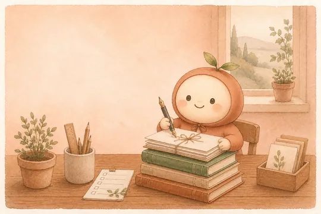
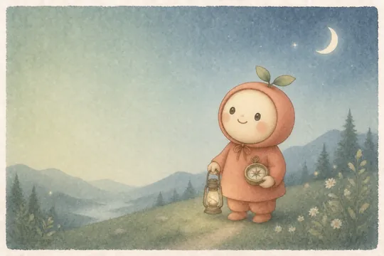
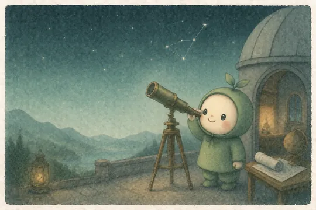
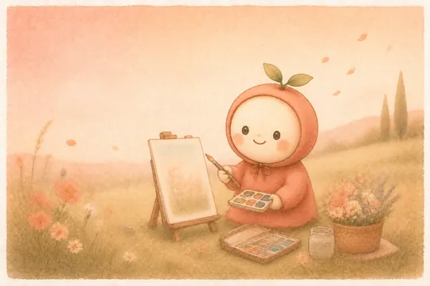
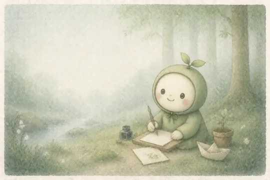
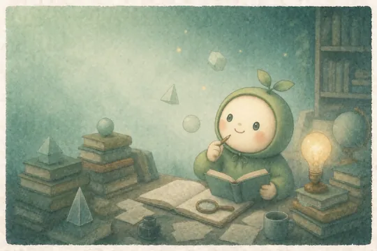
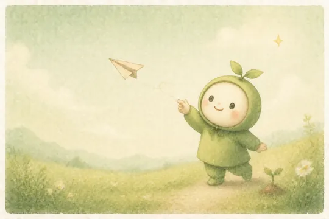
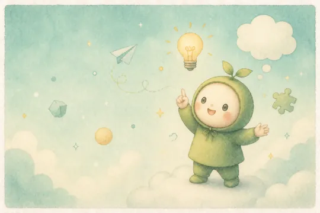
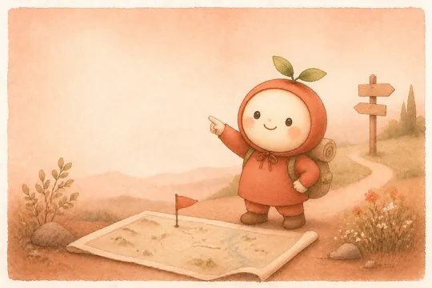
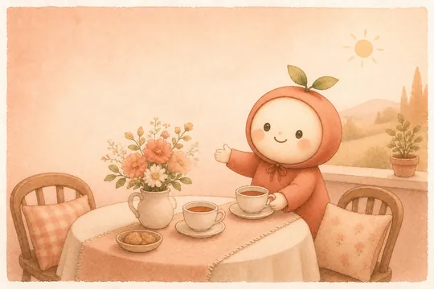
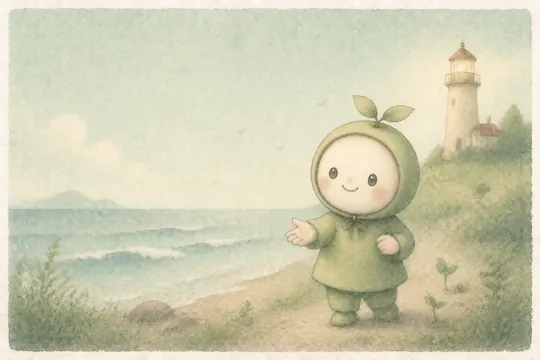
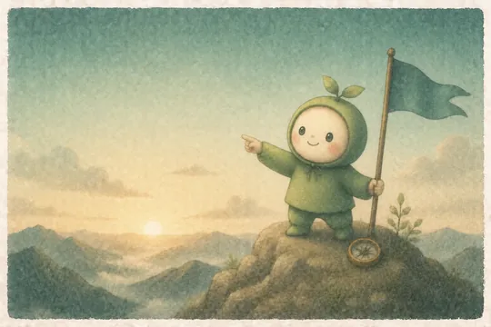
마음 깊이 꿈꾸는 사람
그 밖에도, 조용히
AI 되묻기
카드 끝에 AI가 한 걸음 더 물어봅니다. 대답은 그대로 기록이 됩니다.
발자취 검색·마음 달력
감정·기간·키워드로 그날의 기억을 다시 찾습니다.
다섯 갈래로 남기는 하루
기분·날씨에 더해 누구와·무엇을·어디서까지. 한 줄 알약을 톡 누르면 끝납니다.
마음에 남는 글귀
그날의 마음에 맞는 짧은 글귀가 홈과 알림에 조용히 놓입니다.
기록 여정
쌓인 기록이 뱃지가 되고, 뱃지를 누르면 그날의 기억으로 이어집니다.
하루 카드 공유
오늘의 기록을 카드 이미지로 만들어 나눕니다. 만드는 것도 기기 안에서.
조용한 알림
저녁 기록·주간 돌아봄·글귀까지 종류별로 켜고 끕니다. 원치 않으면 전부 꺼도 됩니다.
폰 안에서 되는 건,
한 번만 내면 영원히
기록하고, AI가 정리하고, 연출로 음미하는 흐름은 전부 무료입니다. Pro는 그 시간을 더 아름답게 만드는 선택입니다.
- 연출 테마 전부 (계절 · 날씨를 따라 바뀌는 연출까지)
- 장면 전환 연출 (필름 줌 · 빛 번짐 · 잉크 번짐)
- 여러 장면 기록 (하루를 사진과 글 여러 장으로)
- 독점 나레이션 보이스 7종
- 프리미엄 감성 서체
당신의 하루는 기기를 떠나지 않습니다
AI 하루 카드 생성과 음성 나레이션은 휴대폰에서 동작하는 온디바이스 모델로 처리되어, 기록·사진은 외부 서버로 전송되지 않습니다. 네트워크는 AI 모델과 글꼴·문구 같은 콘텐츠 파일을 내려받는 데 쓰이고, 앱이 갑자기 종료되면 원인을 고치기 위한 진단 정보(기기·앱 버전, 오류가 난 위치)가 전송됩니다 — 기록 내용은 담기지 않습니다.
기기 안에서
계정도, 서버도 없습니다. 비행기 모드에서도 전부 동작합니다. 말로 받아쓸 때만, 기기에 오프라인 음성 인식이 없으면 그 사실을 알리고 운영체제 인식으로 넘어갑니다.
앱 잠금
기기 생체인증으로 기기 안에서도 나만 볼 수 있게 지킵니다.
백업과 복원
보내지 않는 대신, 기록 전체를 한 파일로 만들어 직접 보관합니다.
시작 전에 궁금한 것들
월 구독인가요?
아니요. 폰 안에서 완결되는 기능은 한 번 결제하면 영원히 열립니다. 자동결제도, 해지할 것도 없습니다.
사보기 전에 써볼 수 있나요?
설치하면 열나흘 동안 모든 기능이 열려 있습니다. 결제수단을 등록할 필요도 없습니다. 열나흘이 지나도 그동안 만든 기록은 언제든 다시 볼 수 있습니다.
기록이 얼마나 쌓여야 지나온 길을 볼 수 있나요?
열나흘부터 열립니다. 세 달이 넘으면 계절 챕터로, 연말이 되면 한 해 전체로 자랍니다.
내 기록은 어디에 저장되나요?
전부 휴대폰 안에 저장됩니다. AI 정리와 나레이션은 기기 안에서 동작하고, 기록·사진은 외부 서버로 전송되지 않습니다.
회원가입이 필요한가요?
아니요. 계정 없이 바로 시작합니다. 이메일도, 전화번호도 받지 않습니다.
인터넷 없이도 되나요?
네. 비행기 모드에서도 기록부터 AI 하루 카드, 나레이션까지 모두 동작합니다. 네트워크는 AI 모델과 글꼴·문구 같은 콘텐츠 파일을 내려받을 때 쓰입니다.
AI가 내 일기를 학습하나요?
아니요. AI는 기기 안에서만 동작하며, 기록을 학습하거나 외부로 보내지 않습니다.
말로 받아쓴 내용도 기기 안에 있나요?
받아쓰기는 기기 안에서만 인식하도록 먼저 요청합니다. 다만 기기에 오프라인 음성 인식이 설치돼 있지 않으면 그때만 운영체제 제공자(Google·Apple)의 음성 인식으로 전환되며, 앱이 그 사실을 화면에 알려 드립니다. 받아쓰기를 쓰지 않으면 이 전송은 일어나지 않습니다.
휴대폰을 바꾸면 기록은 어떻게 되나요?
설정의 백업 기능으로 기록 전체를 한 파일로 내보내고, 새 기기에서 복원할 수 있습니다.
어떤 기기에서 쓸 수 있나요?
Google Play(안드로이드)로 먼저 출시됩니다. iOS는 준비 중이에요.
오늘부터 3분 마음 기록
나를 돌아보는 가장 사적인 방법.